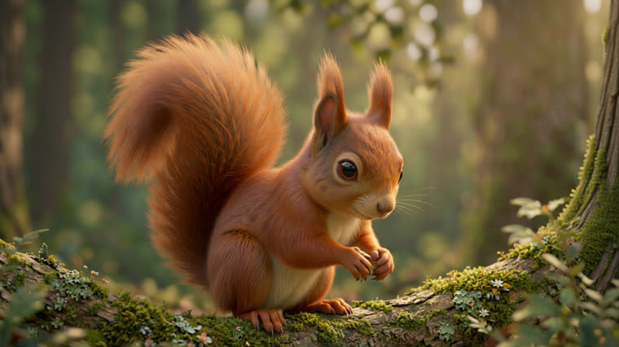
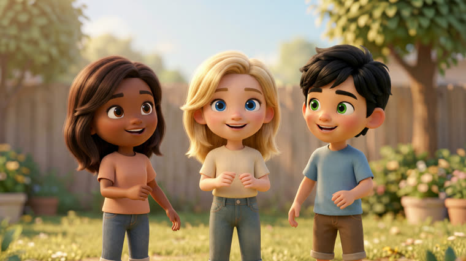

Você dá a história e os personagens. Ele devolve o vídeo pronto, com voz — imagens, cenas animadas e narração, tudo pela API Agnes AI a custo US$ 0.
Um pipeline que lê o conto, desenha os personagens, gera duas imagens por cena (início e fim), anima cada par em vídeo, narra em português e monta o filme. Duas skills acompanham o projeto: videos-agnes (história → filme) e imagens-agnes (imagem avulsa).
Imagens (agnes-image-2.1-flash) e vídeo (agnes-video-v2.0) pela API Agnes AI, sem cobrança por geração. Narração roda local.
Model sheet por personagem: uma âncora-mãe e as demais vistas derivadas dela, para o mesmo rosto atravessar as cenas.
A voz é gerada antes; cada clipe dura exatamente a fala da cena. Revisão de dicção corrige número e moeda por extenso antes do TTS.
Cada história é um arquivo de spec em historias/<nome>.py. O rodar.py percorre tudo, é idempotente (reexecutar só refaz o que falta) e entrega o filme no Telegram.
text2img e img2img com até 2 referências (teto medido — mais que isso satura). Proporção 16:9 via pixels explícitos.
Modo keyframes: cada cena interpola da imagem A para a B. Duração pela regra 8n+1, respeitando o rate limit de 5/min.
Narração TTS local (inemavox, voz bella/chatterbox), com padding para casar fala e imagem sem cortar palavra.
Tudo roda local, exceto as chamadas à API Agnes. As chaves ficam fora do repo.
Em ~/projetos/agnes-nei/.env, lida em runtime.
# .env AGNES_API_KEY=sua-chave
Daemon inemavox para o TTS.
# inemavox localhost:8010
ffmpeg e ffprobe no PATH para montar o filme.
ffmpeg -versionDo clone à entrega, com uma história de exemplo já incluída no repo.
O repo traz o pipeline, as duas skills e uma história de exemplo.
git clone https://github.com/inematds/videos-agnes.git cd videos-agnes
Gera âncoras, cenas, narração, clipes, monta e envia — tudo de uma vez.
python3 rodar.py exemplo # O Pequeno Robô que Aprendeu a Sonhar
Copie o molde e preencha personagens, cenas (2 por cena), narração e movimento. Prompts em inglês; narração em português.
cp historias/exemplo.py historias/minha.py # edite TITULO, ANCORAS, CENAS, NARRACAO, MOVIMENTO python3 rodar.py minha
CLI direto para gerar imagem avulsa (text2img ou img2img), sem montar filme.
python3 skills/imagens-agnes/gerar.py "a red fox in a snowy forest, cinematic" -o fox.png python3 skills/imagens-agnes/gerar.py "..." --ref base.png # img2img
Cenas reais produzidas pelo pipeline, no estilo Pixar 3D em 16:9.


Aprendido em ~70 chamadas reais. A documentação completa está no README.
Em português a API bloqueia conteúdo legítimo com HTTP 400. "Usar um galho como alavanca" foi recusado 4× em PT e passou de primeira em EN.
Cinco referências destroem a imagem: confete de pixels e o prompt é ignorado. Muitos personagens numa cena? Use uma âncora de grupo (várias pessoas juntas = 1 ref).
Em img2img o ratio é ignorado (vira quadrado). Peça size:"1312x736" em pixels, sem ratio, para manter 16:9.
~34% das chamadas voltam 503. O retry com backoff recupera quase todas — não é opcional.
Frontal simétrica duplica cauda/cabeça. Use perfil ou três-quartos e peça "exactly one" no positivo (nunca "no two", que vira atrator).
O vídeo tem rate limit real de 5 requisições/min (429) e tem seed (a imagem não). O tamanho da resposta mente: pede 1312×736, entrega 1280×704 — meça com ffprobe.
O pipeline nasceu medindo a API na prática — o que a documentação promete versus o que ela entrega.